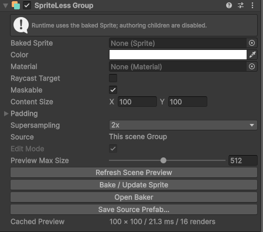
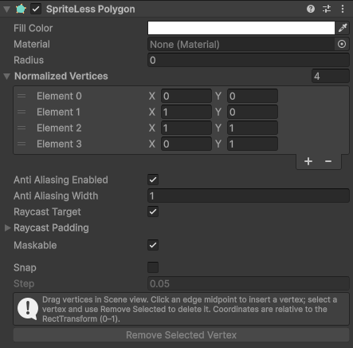
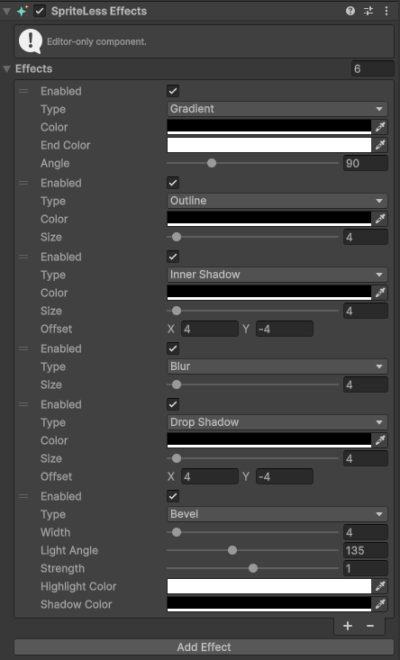
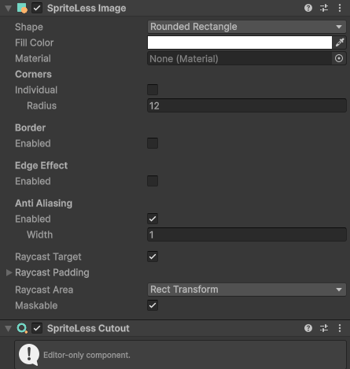
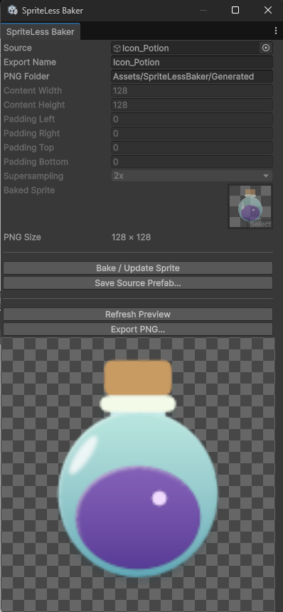

User guide
SpriteLess UI Pro
Arrange shapes in Unity, adjust their appearance in the Inspector, and bake the result into a PNG sprite.
Preparing for releaseYour first bake
- Under a Canvas, create a UI object with SpriteLessGroup. Put your SpriteLessImage or SpriteLessPolygon shapes under it as children. The Group and the shapes belong on separate objects.
- Move and resize the child shapes with their RectTransforms. Adjust colors, corners and effects in their Inspectors.
- Select the Group and click Open Baker. Set PNG Folder to a folder inside your project's Assets.
- Click Bake / Update Sprite. The PNG is saved and assigned to the Group's Baked Sprite field.
- To revise it, turn on Edit Mode, edit the children, and bake again. The linked PNG is updated.
SpriteLessGroup
Editable source in the Editor · baked sprite at runtimeA Group combines its child shapes into one output. Keep the artwork under the Group; use the Group itself to control the output and display the baked sprite.
{kind=link}

A new Group is already in Edit Mode. After the first bake, you can switch between editing the composition and displaying the saved sprite.
- Baked Sprite
- The saved sprite displayed when you are not editing. Baking assigns it automatically.
- Content Size
- Set the width and height of the content in output pixels. Use the RectTransform to position and size it in your UI.
- Padding
- Add space outside the content for shadows, outlines or blur. Defaults to 0. Padding increases the final PNG dimensions.
- Supersampling
- Choose 1x, 2x or 4x. Higher values render at a larger resolution before reducing to the same final PNG size. They also increase bake time and memory use.
- Edit Mode
- Show the editable composition instead of the saved sprite. After changing the artwork, bake again to save the result.
- Preview Max Size
- Limit the editing preview resolution. This does not change the final PNG size. Available in Edit Mode.
Working with nested Groups
Put a Group inside another Group to isolate part of the artwork. This is useful for a frame with a cutout that should not affect the background. Bake the outer Group when finished; you do not need to bake each inner Group first.
SpriteLessImage
Core component · can also be used at runtimeUse this for rectangles, circles, triangles, regular polygons, rings, arcs and chevrons. Create one from GameObject → UI (Canvas) → SpriteLess, then place it under your Group.
- Choose Shape and set Fill Color.
- Use the RectTransform for position, size and rotation.
- Adjust the shape-specific controls, such as Radius, Thickness or Sides. Enable a border or edge effect where available.

See the SpriteLessImage shape reference for each shape's controls, materials and pointer settings.
SpriteLessPolygon
Freeform shape · can also be used at runtimeCreate a custom outline from GameObject → UI (Canvas) → SpriteLess Pro → SpriteLess Polygon. Select it and edit its vertices in the Scene view.
- Drag a vertex handle to reshape the outline.
- Use a handle at the middle of an edge to add a point.
- Select a vertex and click Remove Selected Vertex in the Inspector to remove it.
- Adjust Fill Color and Radius to style the shape and round its corners.
{kind=link}

- Normalized Vertices
- Edit point coordinates relative to the RectTransform. Resize the RectTransform to resize the whole shape.
- Snap / Step
- Enable Snap to move points on a normalized grid. A Step of 0.05 is 5% of the RectTransform on each axis.
- Anti Aliasing
- Soften the shape's edge. Adjust the width for the scale at which you will use the result.
- Material
- Assign a compatible uGUI material, or leave it empty for the default appearance. Check the baked result when using a custom shader.
For an outside border, add SpriteLessEffects → Outline.

SpriteLessEffects
Editor-only · included in previews and baked PNGsAdd this component to a shape to affect that shape, or to a Group to affect the combined artwork. Click Add Effect and choose a type. Use Enabled to compare the result with and without an effect.
{kind=link}

- Gradient
- Set Color, End Color and Angle. The gradient multiplies the shape's fill color; start with a white fill if you want the gradient colors unchanged.
- Outline
- Choose a Color and increase Size to add an outside border. Add Group padding if the border is clipped.
- Bevel
- Use Width, Light Angle and Strength to create a raised edge. Adjust Highlight Color and Shadow Color to control the lighting.
- Inner Shadow
- Set Color, Size and Offset for a shadow inside the outline.
- Blur
- Increase Size to soften the artwork. Leave room around it with Group padding.
- Drop Shadow
- Set Color, Size and Offset for a shadow behind the artwork. Make sure the Group bounds or padding include it.
Different effect types can be combined. Only one active entry of each type is supported. The processing order is fixed:
Gradient → Outline → Bevel → Inner Shadow → Blur → Drop Shadow

SpriteLessCutout
Editor-only · subtracts a shape from the output- Create the shape of the hole using SpriteLessImage or SpriteLessPolygon.
- Add SpriteLessCutout to that same object, not to the Group itself.
- Move and resize the shape to place the hole. Check the result in the Group preview or Baker preview.
{kind=link}

The cutout affects its nearest active Group. To keep other artwork intact, put only the shapes you want to cut in a nested Group:
Outer Group
├─ Background shape
└─ Frame Group
├─ Frame shape
└─ Hole shape + SpriteLessCutoutHere, the hole removes part of the frame but leaves the background untouched. Without a Group, Export PNG applies the cutout within the selected output hierarchy.

Baker window
Open Tools → SpriteLess UI Pro → Baker, or click Open Baker on a Group. The Windows shortcut is Ctrl + Shift + Alt + I.
Choose Source and PNG Folder. With a Group selected, edit content size, padding and supersampling in the Group Inspector; the Baker shows those same settings.
{kind=link}

- Bake / Update Sprite
- Save the Group's output and assign it to Baked Sprite. Use this to keep editing and updating the same resource.
- Create Group
- Wrap a selected source that has no Group. Choose this if you want a reusable, linked baking workflow.
- Refresh Preview
- Render a temporary preview in the window. It does not save a PNG or update the baked sprite.
- Export PNG…
- Save a one-time PNG of the selected hierarchy. Works without a Group and does not create a source link, Prefab or Image object.
Output size and quality
The final PNG Size includes padding. Each side can be up to 4096 pixels, subject to your device's capture-size limit. Supersampling changes capture resolution, not the final PNG dimensions. If a bake is too large, reduce supersampling first.
Save an editable source Prefab
Baking and saving a Prefab are separate actions. A scene Group can be baked without creating a Prefab.
- On a scene Group, click Save Source Prefab… and choose the destination. The Group is saved and connected to the Prefab.
- Use Open Source Prefab to edit a connected source. Save your changes, then bake again.
- If you edit the connected instance in a scene, use Unity's Apply or Revert for authoring changes before baking. The baker does not apply overrides automatically.
Duplicating a Group or source Prefab creates a separate output on its first bake, so you can develop a variation without replacing the original output.
Use the result in your game
Either keep the baked Group in your UI, or assign the generated sprite to a regular UI Image → Source Image.
- SpriteLessImage and SpriteLessPolygon can draw shapes directly at runtime.
- SpriteLessGroup displays the saved sprite at runtime and disables its authoring children. Bake your final changes before entering Play mode or building.
- SpriteLessEffects and SpriteLessCutout are editor authoring tools. Their appearance must be baked; they do not run as live gameplay effects.
Supported bake inputs
Use SpriteLessImage and SpriteLessPolygon as source graphics. Ordinary UI Image, text and TextMeshPro inputs are not currently supported. Custom materials need to be compatible with the baker; an arbitrary shader is not guaranteed to reproduce correctly in a transparent PNG.
Troubleshooting
The sprite still shows the old artwork.
Refresh Preview only creates a temporary preview. Click Bake / Update Sprite to update the saved PNG. If the Group has a source Prefab, check that its authoring changes are saved or applied.
A shadow or outline is cut off.
Increase the Group's Padding on the affected side, or leave more space inside the content bounds. Bake again to update the output.
A cutout removes more than I wanted.
Its scope is the nearest active Group. Put the cutout and the shapes it should affect in their own nested Group. Keep the other shapes outside that Group.
The cutout component shows a placement warning.
Add it to the same object as a SpriteLessImage or SpriteLessPolygon. Do not attach it directly to the Group or to an empty object.
The bake is too large or takes too long.
Try Supersampling → 1x, then reduce content size or padding if needed. Higher supersampling and more effect layers require additional work and memory. Follow the bake dialog's specific size or device-limit message.
My child objects disappear in Play mode.
This is expected for a baked Group: its children are authoring resources. Move interactive UI and gameplay objects outside the Group's authoring hierarchy.
Need help?
Email darknesstyranno@naver.com. For a bug report, include your Unity version, package version, the steps to reproduce it, and any error message or screenshot.
Back to top ↑